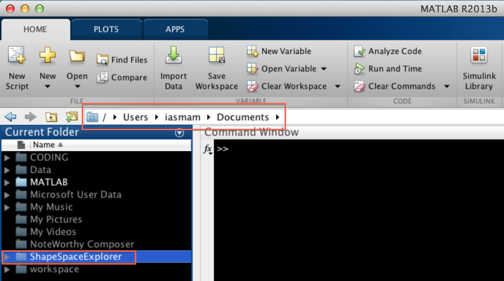
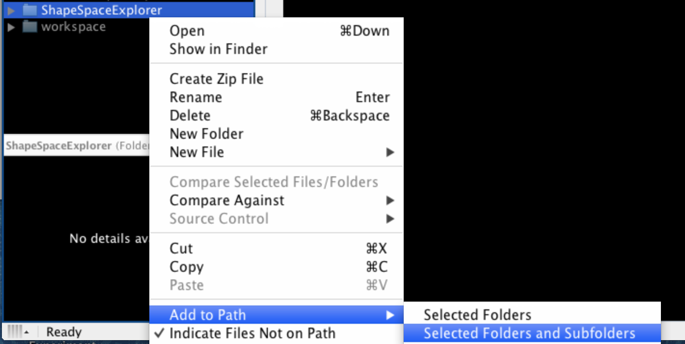
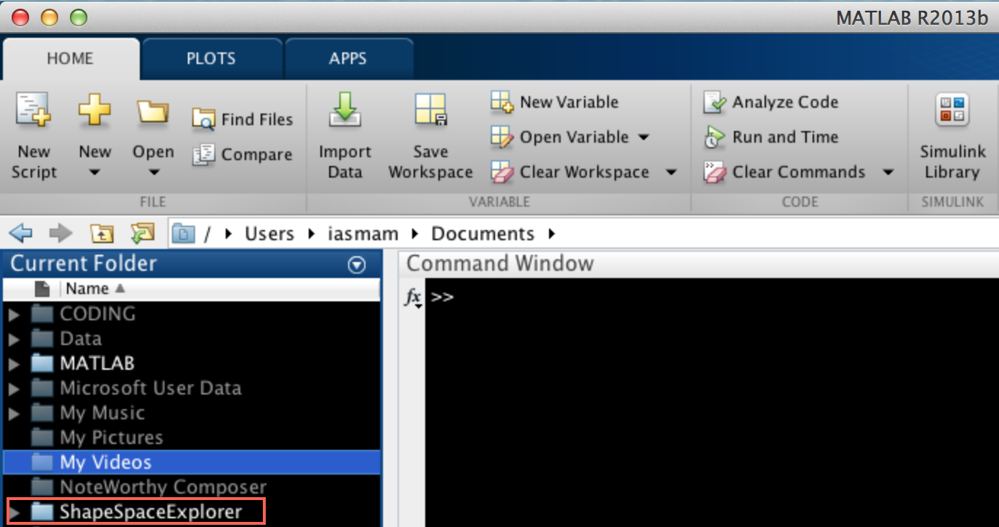
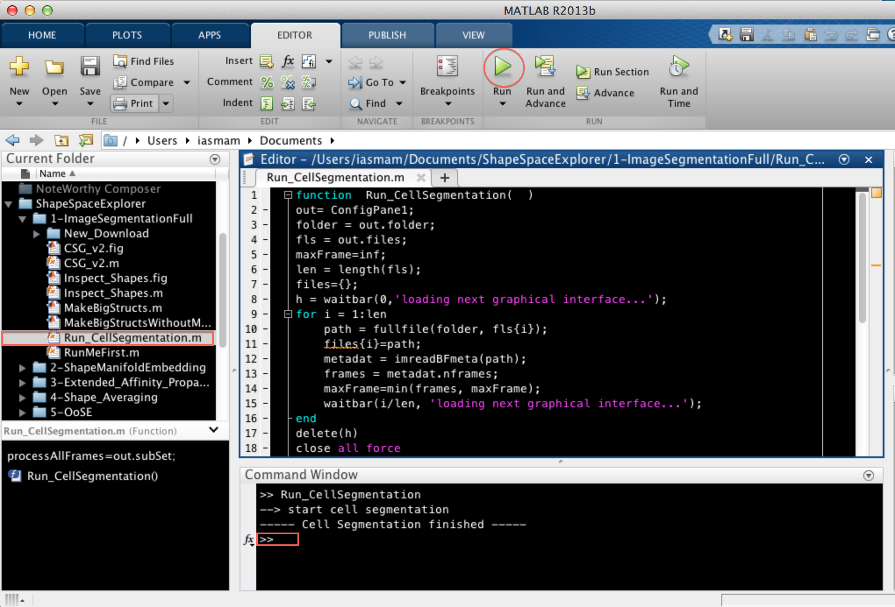

Terminologies for the Tutorial
To make the tutorial easy to read, a couple of terms are introduced:
- Movie folder: the folder containing your microscopy data
- Analysis folder: your folder containing the complete set of analysis files generated using the ShapeSpaceExplorer package described in this tutorial. For this tutorial it is important to save all outputs in this folder unless stated otherwise.
- Run a “specificMatlabFile.m”: this means, the path is added to your path, and a click on the “Run” button in the toolbar executes the program. Should these instructions feel unfamiliar, read the next Section “New to Matlab”
- Matlab: The program has been tested on Matlab 2017b on Ubuntu 16.04 LTS.
- All figures produced in the tutorial are automatically saved in the folder Analysis>Figures unless specified otherwise.
New to Matlab
If you have never used Matlab before, you should install the program and obtain a license first. Most universities offer free licenses for staff and students. A comprehensive guide can be found at Mathworks
The ShapeSpaceExplorer package has been tested with MatlabR2017b. If you are using any other version, not all functions might work properly. To download please perform the following steps:
- Login to www.mathworks.com
- Click My Account
- Click “Download Now” under Account Services, below the wording “MathWorks Account
- Click Download on the next page (under Licensed Products and Updates)
- On the following screen, there is a selection of the newest releases. To the right of the most recent version link, there is the link “Choose another release”
- After clicking select MatlabR2017b and proceed with download
- NOTE: This facility is not available for Student Version or trials since they are version specific.
To run the program, you need the folder ShapeSpaceExplorer containing all files. Within the Matlab program go to the folder “ShapeSpaceExplorer” (see figure below).

Then, right click on ShapeSpaceExplorer folder, and select “Add to Path” > Selected Folders and Subfolders (see below)

This adds the ShapeSpaceExplorer to the Matlab paths, which means, the programs are easy to execute. The ShapeSpaceExplorer folder should appear as active (see figure below)

To run a script, open ShapeSpaceExplorer > 1-ImageSegmentationFull and select the File “Run_CellSegmentation.m” with a double click (see below). Then click on the “Run” button in the Toolbar. The first line in the command window should then contain the line
>> Run_CellSegmentation

Once a script has finished properly, the Command Line shows a new line:
>>